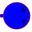
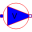
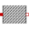
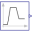

TwoMassCooling of two hot masses |
|
Diagram
{kind=link}
Information
This information is part of the Modelica Standard Library maintained by the Modelica Association.
8th test example: TwoMass
Two thermal capacities are coupled with two parallel coolant flow. Different initial temperatures of thermal capacities and pipe's coolants get ambient's temperature, the time behaviour depending on coolant flow.Parameters (4)
| medium |
Value: FluidHeatFlow.Media.Medium() Type: Medium Description: Cooling medium |
|---|---|
| TAmb |
Value: 293.15 Type: Temperature (K) Description: Ambient temperature |
| TMass1 |
Value: 313.15 Type: Temperature (K) Description: Initial temperature of mass1 |
| TMass2 |
Value: 333.15 Type: Temperature (K) Description: Initial temperature of mass2 |
Outputs (7)
| dTMass1 |
Default Value: heatCapacitor1.port.T - TAmb Type: TemperatureDifference (K) Description: Mass1 over Ambient |
|---|---|
| dTtoPipe1 |
Default Value: heatCapacitor1.port.T - pipe1.T_q Type: TemperatureDifference (K) Description: Mass1 over Coolant1 |
| dTCoolant1 |
Default Value: pipe1.dT Type: TemperatureDifference (K) Description: Coolant1's temperature increase |
| dTMass2 |
Default Value: heatCapacitor2.port.T - TAmb Type: TemperatureDifference (K) Description: Mass2 over Ambient |
| dTtoPipe2 |
Default Value: heatCapacitor2.port.T - pipe2.T_q Type: TemperatureDifference (K) Description: Mass2 over Coolant2 |
| dTCoolant2 |
Default Value: pipe2.dT Type: TemperatureDifference (K) Description: Coolant2's temperature increase |
| dTmixedCoolant |
Default Value: ambient2.T_port - ambient1.T_port Type: TemperatureDifference (K) Description: Mixed Coolant's temperature increase |
Components (12)
| medium |
Type: Medium Description: Cooling medium |
|
|---|---|---|
|  | ambient1 |
Type: Ambient |
|  | pump |
Type: VolumeFlow |
| pipe1 |
Type: Pipe |
|
| pipe2 |
Type: Pipe |
|
| pipe3 |
Type: Pipe |
|
| ambient2 |
Type: Ambient |
|
| heatCapacitor1 |
Type: HeatCapacitor |
|
|  | thermalConductor1 |
Type: ThermalConductor |
| heatCapacitor2 |
Type: HeatCapacitor |
|
| thermalConductor2 |
Type: ThermalConductor |
|
|  | volumeFlow |
Type: DoubleRamp |